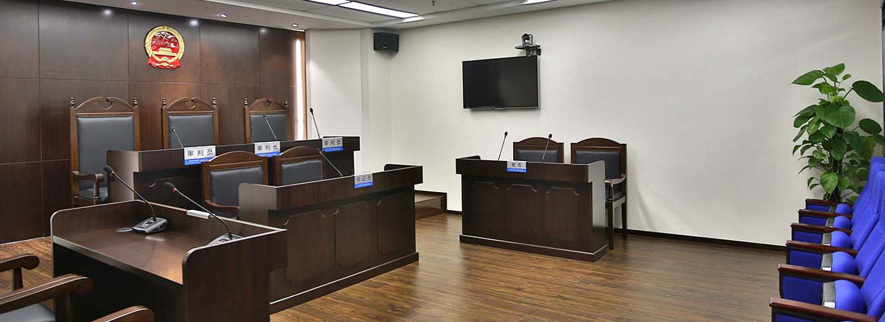
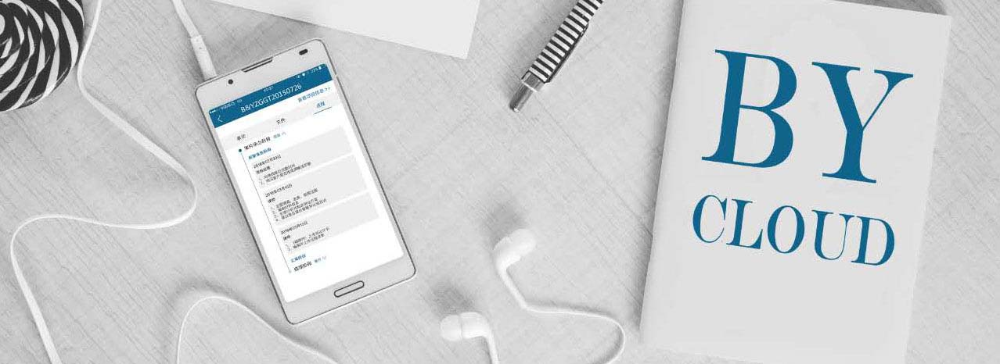
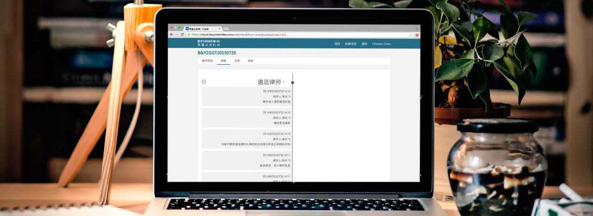

帮帮，居于当事人和律师之间，处理客户与律师之间的专业事务。
区别于传统“自由贸易”式的电商平台，帮帮法务中介服务与客户、律师三方更紧密协作。
凭借多年法律专业服务经验和风险评估能力，依托帮帮大数据分析和自主研发的软件工具， 帮帮将替客户遴选最适合的律师、与律师进行专业平等的沟通，并以无需偿还的方式替客户支付所有前期律师费用!
帮帮建立了一个大数据库，目前大数据库已有相当数量的、在诉讼方面很厉害的律师，通过帮帮大数据库对众多律师的不同出处、不同业绩、不同执业特点等要件，做出更深入的研究 分析后选择的律师，肯定比普通当事人自己选更加精准。
我们坚信全新的帮帮模式一定能够给客户和律师带来一种全新的服务体验，同时我们也更加坚信，帮帮模式必将推动中国法律服务业持续创新和蓬勃发展!
帮帮完全参照真实的法庭/仲裁庭，打造了一个原装模拟法庭，通过实战的方式模拟真实庭审，在项目评估阶段、律师遴选阶段、项目承办阶段对案件进行实战对抗。
为承办律师起到演练预判、复盘的作用，同时也为当事人评估代理律师 、确定争议解决策略，提供更富体验感的决策参考。
帮帮基于运营团队曾经丰富的诉讼业务经历，甚至诉讼案件审判经历，自主研发了云助理App软件。
将整个诉讼案件的一审、二审、再审和执行，甚至过程中涉及到的财产保全程 序、鉴定程序等，分解规范成了17个环节、99个节点。
云帮帮助理-客户端，当事人可清楚的了解整个诉讼流程、各个环节，轻松掌控承办律师在 各阶段的进展状况，使非法律专业的当事人也能对案件进程一目了然。
帮帮云助理-律师端，有助承办律师为当事人提供专业法律服务的同时，提升律师规范化作 业水平及诉讼专业技能。
在迅速提高工作效率的同时学会知识管理，提升专业技能。